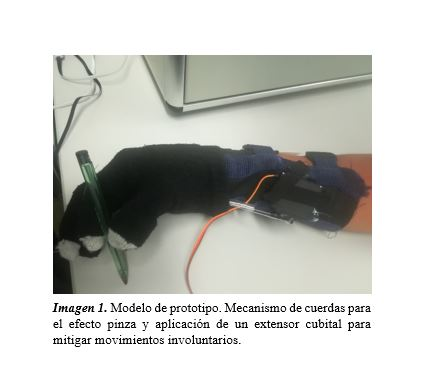

PROTOTIPO: MODELO Y FUNCIONAMIENTO
Desde un comienzo, nuestro proyecto se basó en la construcción y modelado de un dispositivo médico capaz de mitigar los movimientos involuntarios en el usuario producidos por la enfermedad de Parkinson. Al mismo tiempo, se buscó otorgar la estabilidad necesaria para que el paciente pueda mantener el efecto pinza lo suficiente para firmar documentos.
Nuestro prototipo logra conceder al usuario el mecanismo pinza gracias a un circuito unido a cuerdas de nylon, estas a su vez están unidas a un servomotor (MG946R) el cual se encargará de atribuirle la fuerza necesaria para ejercer tensión en cada uno de los cables de nylon. Estos cables se encontrarán previamente conectados a unos dedales, colocados únicamente en los dedos implicados para el efecto pinza (índice y pulgar), así debido a la tensión ejercida los dedos flexionarán hasta llegar al punto preciso del mecanismo pinza.
Como se ha mencionado anteriormente, nuestro proyecto también concede la capacidad de mitigar los movimientos involuntarios en un paciente de estadío 2, los llamados “cuenta monedas”, esto será posible gracias a que se le proporcionó un extensor cubital en la parte interior del guante el cual al ejercer presión en dicha zona cumple su objetivo.
Finalmente, se realizó la selección de los componentes y el método de operación tomando en cuenta el estadío del paciente (en este caso dos); así como la fuerza requerida en la mano para que el usuario pueda realizar sus actividades diarias, esta última fue medida mediante una prueba de caracterización.
Nuestro prototipo tuvo el siguiente funcionamiento:
REFERENCIAS
Programa facil (s/f).Servomotor con Arduino. Recuperado de: https://programarfacil.com/tutoriales/fragmentos/servomotor-con-arduino/
(forum.arduino.com, 2016).Recuperado de: https://forum.arduino.cc/index.php?topic=336454.0
Prometec, 2016. Recuperado de: https://www.prometec.net/fuentes-step-down/
Naylamp, 2018.Recuperado de: https://naylampmechatronics.com/servomotores/23-servo-mg946r-13kg.html
mindsensors.com,2018. Recuperado de: http://www.mindsensors.com/arduino-accessories/143-9-grams-servo-motor